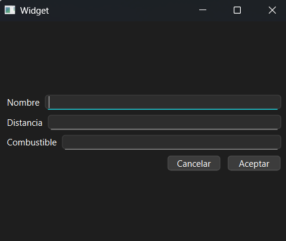
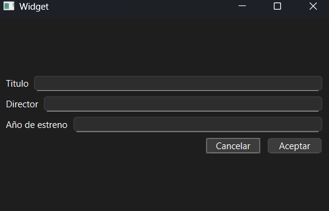

Control de Tiempo para Actividades
Usa el botón de abajo para iniciar y detener un temporizador que te ayude a medir el tiempo que dedicas a cada ejercicio.
00:00:00Ejercicio 1: Gestión de Tramos
- Consigna: Realizar un programa con Qt que permita manejar un listado de tramos, como puede verse en la interfaz de arriba. El programa debe cumplir con los siguientes puntos.
-
Elementos de Qt a utilizar:
QComboBox, QLineEdit (3), QPushButton (6), QDialog, QMessageBox, vector (std::vector). - Puntos que debe cumplir:
- Modelar el objeto "Tramo" con los atributos id (índice), nombre, distancia (km) y combustible (litros).
- Modelar un objeto "ListadoTramos" con un vector (C++) de tramos como atributo y los métodos de agregar, editar, quitar, calcularPromedio, mayorTramo y menorTramo.
- Al elegir 'agregar' el programa debe agregar un nuevo tramo empleando el diálogo de abajo.
- Al elegir 'editar' el programa debe modificar el tramo elegido empleando el diálogo de abajo, mostrando los datos del tramo a editar.
- Al elegir 'quitar' preguntar al usuario si desea quitar el tramo elegido.
- Al elegir 'mostrar cálculos' el programa debe mostrar en un QMessageBox el promedio de distancias, el tramo con mayor distancia y el tramo con menor consumo de combustible.

Ejercicio 2: Gestión de Películas
- Consigna: Desarrolla un programa en Qt que gestione una lista de películas, permitiendo agregar, eliminar y buscar títulos.
-
Elementos de Qt a utilizar:
QLineEdit, QPushButton (4), QListWidget, QDialog, QMessageBox, std::vector, QMessageBox. - Puntos que debe cumplir:
- Modelar el objeto "Película" con los atributos: título, director y año de estreno.
- El programa debe permitir agregar una nueva película a la lista.
- Debe ser posible eliminar una película seleccionada de la lista.
- Al seleccionar una película, debe mostrarse la información completa (título, director, año) en un QMessageBox.
- Validar que los campos de entrada no estén vacíos antes de agregar una película.
- Si se presiona eliminar y no se selecciono una pelicula debe saltar un Warning
